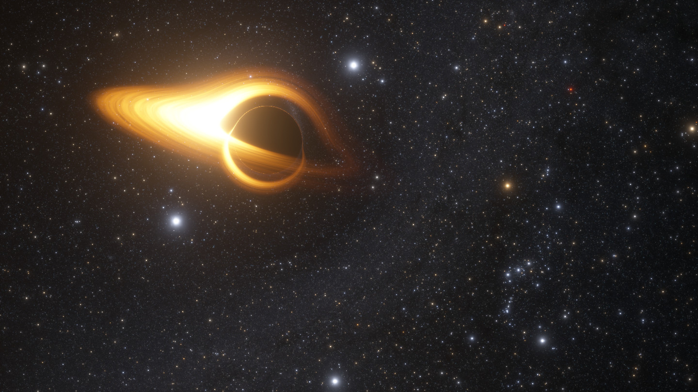
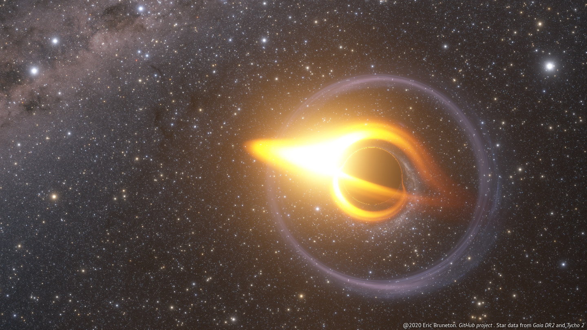
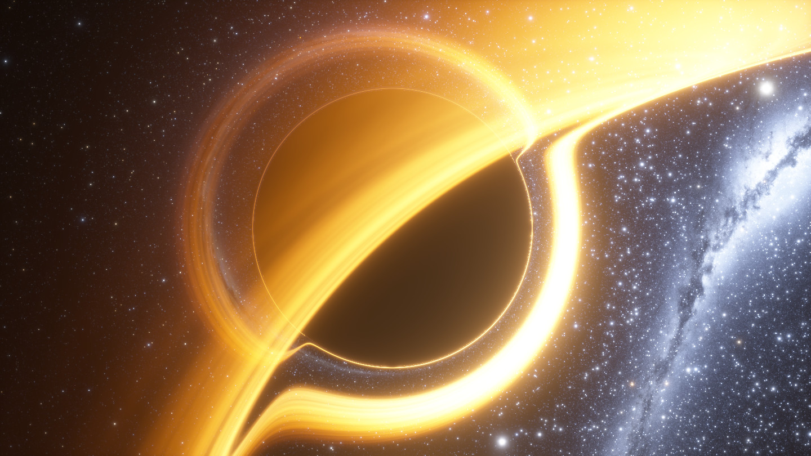
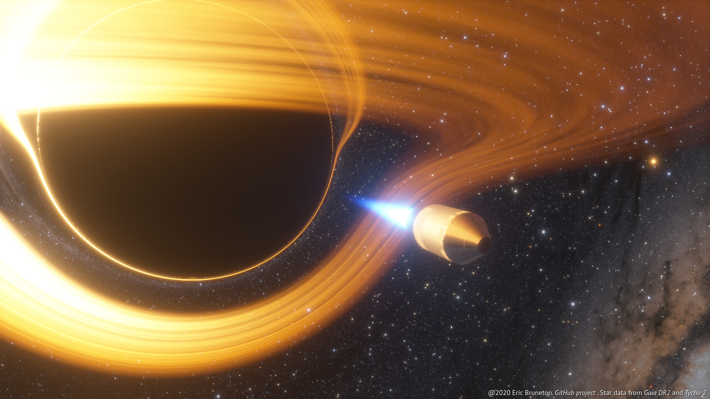

A Real-time High-quality Black Hole Shader
Eric Bruneton, 2020

A black hole near Orion, with 2
opposite images of a star around it [demo].
Introduction
We propose a real-time method
to render high-quality images of a non-rotating black hole with an accretion
disc and background stars. Our method is based on beam tracing, but uses
precomputed tables to find the intersections of each curved light beam with the
scene in constant time per pixel. It also uses a specific texture filtering
scheme to integrate the contribution of the light sources to each beam.
Gallery
Here are some images obtained with our method.

The Large
Magellanic Cloud forming an
Einstein ring
around the black hole [demo].

Near the speed of light lengths are contracted in the direction of motion
(from left to right), colors are blue-shifted ahead and red-shifted behind
(due to
relativistic Doppler effects) and their intensity increases ahead and
decreases behind (due to
relativistic
beaming effects) [demo].

Same conditions as above, but with an accretion disc too [demo].

A static observer represented with a rocket. To keep its position fixed
instead of falling into the black hole, the rocket engine must be on [demo].
A freely falling observer orbiting around the black hole, represented with a
rocket. By definition of free fall, the rocket engine must be off [demo].
Usage
A demo illustrating our method is available online. To recompile it and precompute all the data
from the source code, clone the git repository, init
the submodules, and type make (this requires GNU make, the GNU C++
compiler, the sed, curl and gunzip command line tools, and the libcurlpp-dev,
libpng-dev, zlib1g-dev libraries).
Structure
The source code is organized as follows:
- black_hole/
- demo/
- camera_view/
- model/
- orbit_panel/
- rocket/
- settings_panel/
- url_params/
- preprocess/
- definitions.glsl
- functions.glsl
- model.glsl
- bloom/
- color_maps/
- gaia_sky_map/
- rocket/
- tools/
It consists of a small generic part (in bold), together with a more specific
demo (everything else) showing how the generic model can be used in practice.
The generic part does not depend on the rest of the code, and is divided in
two subparts: preprocessing and rendering. The preprocessing, in
black_hole/preprocess/, implements the Precompute procedure in Algorithm 1 of our model. The
rendering part, in the black_hole/*.glsl files, provides a library
of GLSL functions implementing the
TraceRay procedure in
Algorithm 1 of our model, but
also our custom texture filtering method for stars, our accretion disc shading
model, the gravitational lensing effect, and the relativistic Doppler and
beaming effects.
The demo is also divided in a preprocessing part and a rendering part. The
preprocessing code is used to generate
- parameters for the bloom shader effect (in
bloom/),
- textures for the stars, the Doppler effect, etc (in
gaia_sky_map/ and color_maps/),
- a 3D model for the rocket (in
rocket/).
The rendering part, in black_hole/demo/, is a WebGL 2
application organized into several UI components interacting via a shared model:
- The
model/ component manages the state of the system, and
notifies its listeners when this state changes. In particular, it updates
the camera position along its orbit, and the camera Lorentz transform, as
described in Appendix C of
our model.
- The
orbit_panel/ component presents a read-only, partial view
of this state in the top-right panel of the UI.
- The
settings_panel/ component presents another part of this
state, in the top-left panel of the UI. This component allows the user to
modify some state parameters via checkboxes and range sliders.
- The
url_params/ component presents the state as URL
parameters, so that the current view can be shared via URLs.
- Finally, the
camera_view/ component renders the view from the
camera with WebGL 2, by using a small wrapper around our generic black hole
rendering functions (and the rocket/ component to render the 3D
rocket).
Documentation
The documentation of the generic black hole shader functions consists of a general overview of our method and
algorithms, and a detailed description of their implementation:
The demo code is simpler and is documented with inline comments.